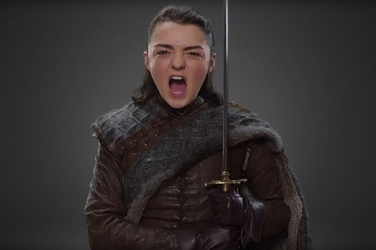

Nine years old at the start of A Game of Thrones, Arya's appearance is more Stark than Tully, with a long face, grey eyes, and brown hair.She is skinny and athletic. She is generally regarded as plain, as exemplified by a nickname "Arya Horseface", and is often mistaken for a boy. However, there are instances of her being called pretty and compared to her beautiful late aunt, Lyanna Stark. Arya is a spirited girl interested in fighting and exploration, unlike her older sister, Sansa. Arya wants to learn how to fight with a sword and ride in tourneys, to the horror of Sansa, who enjoys the more traditional pursuits of a noblewoman.
Arya is left-handed and talented in sums and housekeeping, and is excellent at horse-riding. In contrast to her more praised sister Sansa, who favors activities traditionally befitting a noblewoman and expresses disdain for outdoor activities, Arya shows no interest in dancing, singing and sewing, and revels in fighting and exploring, much to the chagrin of her mother and household tutor Septa Mordane. She is described as "wolf-blooded", blunt, impulsive and "always difficult to tame" by her mother, and was given the nickname "Arya Underfoot" by the guards of Winterfell. She is particularly close to her bastard half-brother Jon Snow, who encourages her to learn how to fight and gives her the smallsword Needle. The sword is well suited to Arya's slender build and her favored "Water Dance" (fencing) style which emphasizes speed and agility with a thin, light rapier used in quick thrusting attacks. Throughout her travels, Arya displays great resourcefulness and cunning and also becomes increasingly ruthless.
Arya is the only one out of her full-siblings to inherit the Stark features and is said to resemble her late aunt Lyanna in both looks and temperament. At the start of the series, she is generally regarded as messy and plain-looking, and often mistaken for a boy; but there are multiple instances in the books of her (favorable) comparison to the beautiful Lyanna, and catching the eye of men later on in the series. She is also a skinchanger, capable of telepathically possessing her direwolf Nymeria in dreams, as well as psychically bonding with a street cat in Braavos.
 |
|||||||||
| Alias | |||||||||
|---|---|---|---|---|---|---|---|---|---|
| Arya HorseFace | |||||||||
| Arry | |||||||||
| Cat Of The Canals | |||||||||
| Wolf Girl | |||||||||
| Title | |||||||||
| Princess | |||||||||
| Books | |||||||||
| A Game of Thrones | |||||||||
| A Clash of kings | |||||||||
| A Strom of swords | |||||||||
| Feast For Crows | |||||||||
| Dance with Dragons | |||||||||